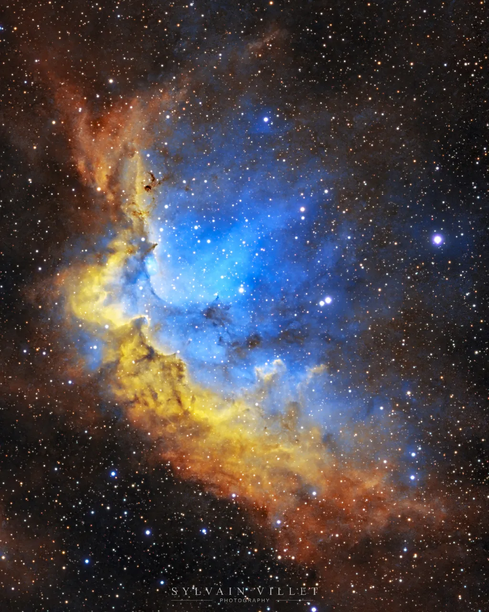

ZeSolver
Find the sky.
Fast local plate solving for astronomical images.
Learn more →Open-source astrophotography tools
Open-source astrophotography tools.
Built to work together.
From plate solving to mosaics, analysis and stacking, ZeSoftware is a collection of independent tools designed to make astrophotography processing more capable, transparent and accessible.
Image processing: Adriano Alfaro • Dataset: The Seestar Collective
The ecosystem
Use the application you need, or let ZeAlfie bring the whole ecosystem together.
Find the sky.
Fast local plate solving for astronomical images.
Learn more →See beyond a single frame.
Plan and assemble astronomical mosaics.
Learn more →Understand your data.
Inspect, analyse and prepare imaging sessions.
Learn more →Turn frames into signal.
Stack and process large astronomical datasets.
Learn more →Bring it all together.
Install, update and launch the ZeSoftware ecosystem from one place.
Learn more →Image processing: JEREMYP55 • Dataset: The Seestar Collective
Real data. Real results.
ZeSoftware helps turn astronomical captures into images you can inspect, understand, combine, process and be proud of.
The software should help reveal the sky — not get in its way.

Meet ZeAlfie
ZeAlfie discovers, installs, updates and launches ZeSoftware applications while keeping every tool independently usable.
Philosophy
No subscription.
No locked features.
Install one tool or
the complete ecosystem.
Your images stay
on your machine.
Stable interfaces let each component improve independently.
Get started
Start with ZeAlfie, or download the individual tools directly.
Get ZeAlfieSource available
Available
Experimental